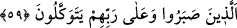

59. Onlar, sabreden kimselerdir ve yalnız Rablerine güvenip dayanmaktadırlar.
“Onlar,” müşriklerin ezâ ve cefâlarına, Allah yolunda hicretin sıkıntı ve
meşekkatlarına ve diğer zorluklara “sabreden kimselerdir ve yalnız Rablerine güvenip
dayanmaktadırlar.”
Bu tevekkül îman kuvvetinden kaynaklanır. Îman kuvvetlenince vatan, mal, rızık ve
diğer şeylerle ilgili hususlar düşünceden çıkar ve gurbet vatan hâline gelmiş olur.
Bunların hepsine karşılık olarak Allah’ın sevâbı ona kâfî gelir. Hadis’te buyrulmuştur
ki: “Kim dini için, bir karış bile olsa bir yerden bir yere kaçarsa cennet ona vâcip
olur, İbrâhim (a.s.) ve Muhammed (a.s.)’a arkadaş olur.”[195]
Cennet ve köşklerin ona vâcip olmasına gelince; bu dini için alıştığı yeri terkedip
âlemlerin Rabbi’nin emrine imtisâl etmesinden dolayıdır. İbrâhim (a.s.) ve Muhammed
(a.s.)’a arkadaş olmasına gelince; hicret sünnetini ihyâ etme konusunda onlara uyduğu
içindir. Çünkü İbrâhim (a.s.) Arz-ı Mukaddes’e, Peygamberimiz Muhammed (a.s.) da
Medine’ye hicret etmişlerdi.
Bu âyette sâlikin mevki ve makamdan hicret etmesinin gerekliliğine işâret vardır. Bu
da, halkın teveccühünden isminin silinme (humûl) arzına bir hicrettir.
Ebû Saîd Harrâz şöyle anlatır: Bir şehirde kalıyordum, adım orada meşhurdu. İşi o
dereceye vardırdılar ki elimden kavun karpuz kabuğu düşmüş olsa yerden alır,
birbirlerinden yüz dinara satın alırlar ve üzerine ekleyerek satarlardı. Kendi kendime
burası bana uygun bir yer değil; benim hayat sürmeme de lâyık değildir dedim. Sonra
oradan hicret ettim. Öyle bir yere gittim ki bana zındık derler ve beni her gün iki defa
taşa tutarlardı. Ben oraya yerleştim. O sıkıntı ve belayı çektim; güzeldi de.
İbrahim Edhem (k.s.)’den şöyle anlatılır: Ömrüm boyunca dünyada üç mutluluk
yaşadım. Bu üç mutluluk sebebiyle nefsimi kahr ettim. Antakya şehrine vardım. Başı
açık yalın ayak yürüyordum. Herkes beni kınıyordu. Birisi “Bu efendisinden kaçmış bir
köledir; efendisi nerede?” dedi. Bu söz nefsime çok hoş geldi. “Ey kaçmış firar etmiş
köle! Barış antlaşması yapıp da efendinin yanına geri gideceğin zaman gelmedi mi?”
dedim.
İkinci mutluluğum şu idi: Bir gemiye binmiştim. Topluluğun içinde maskara bir adam
vardı. Benden daha hakir ve zavallı kimseyi görmüyordu. Sürekli gelir, omuzuma elini
kor, sallardı.
Üçüncüsü: Matya şehrinde bir mescitte hasret dizine başımı koymuş, eksik ve
noksanlık vadisine dalmıştım. Saygısız, edepsiz bir adam geldi ve bana hakaret etti.
Nefsim o anda o hakaretten yok oldu, gönlüm de bununla şâd oldu. Bu mutluluğu,
hakkımda Hakk’ın yüce dergâhından saâdet hediyesi, ikramı olarak kabul ettim.
Pir-i tarikat (Hâce Abdullah-ı Ensârî) şöyle der: Allah’ın örtüsü (setr) altında nice
mağrur kimseler, nimeti içinde de nice istidrâc edenler ve halkın övgüsüne kapılmış
olanlar vardır.